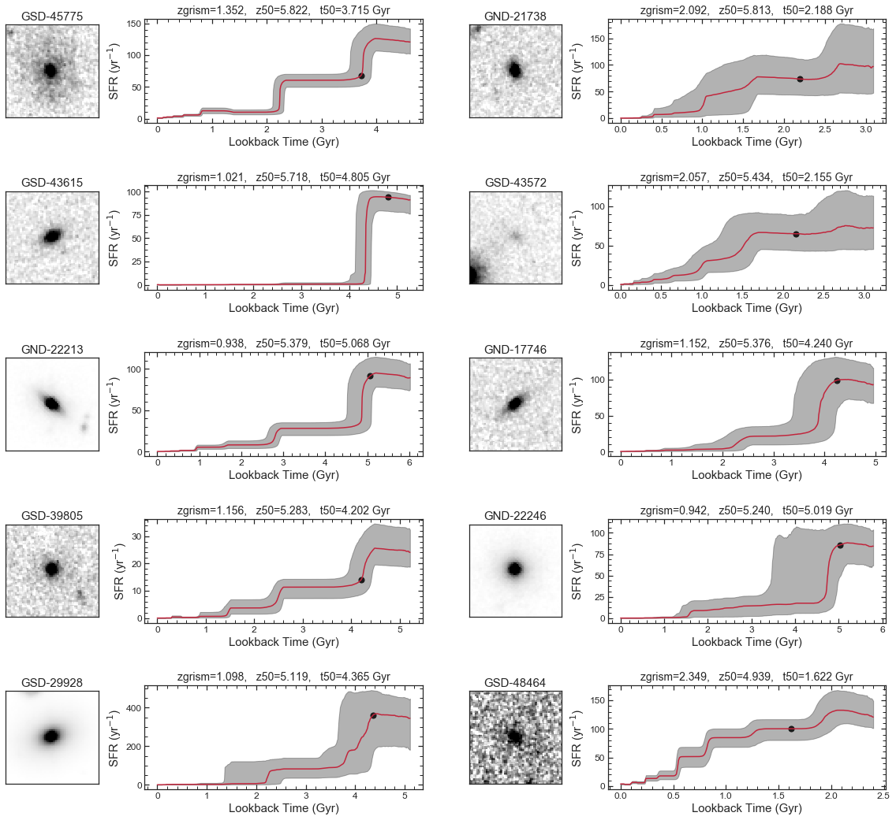
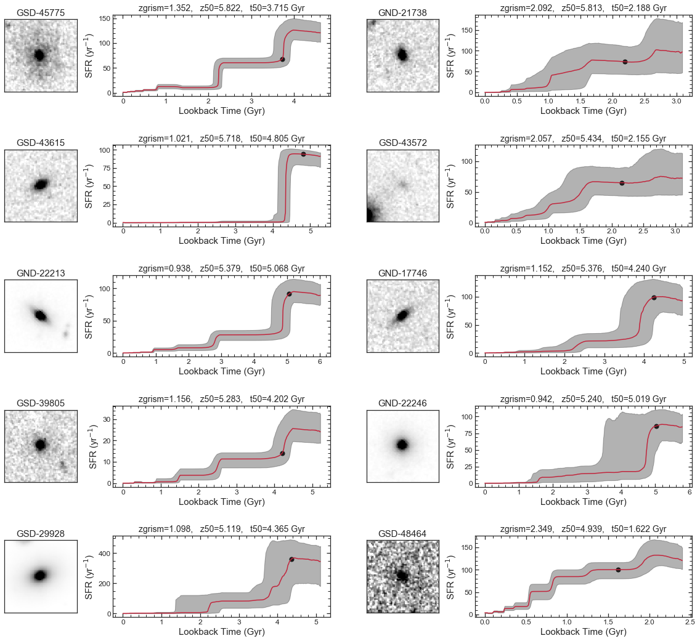
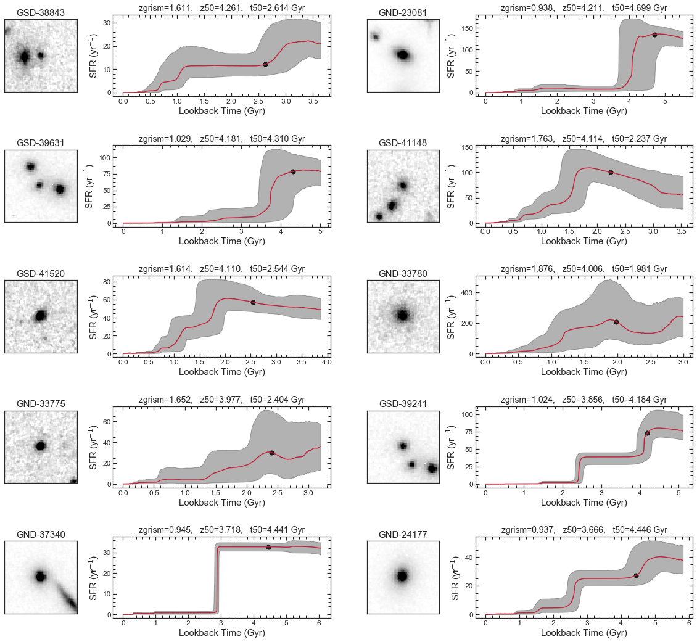
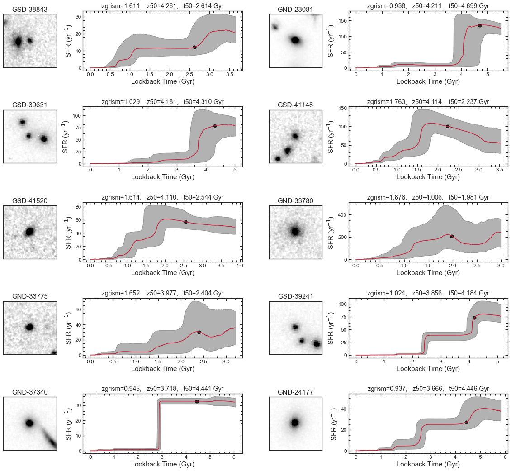
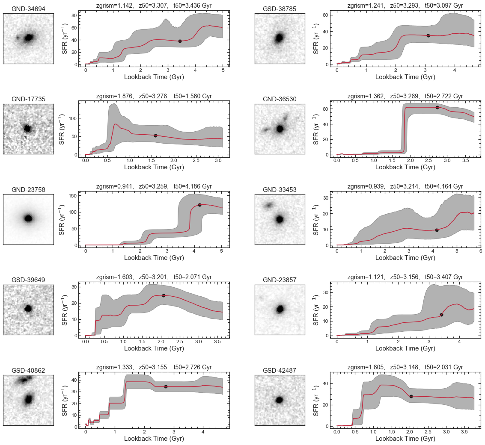
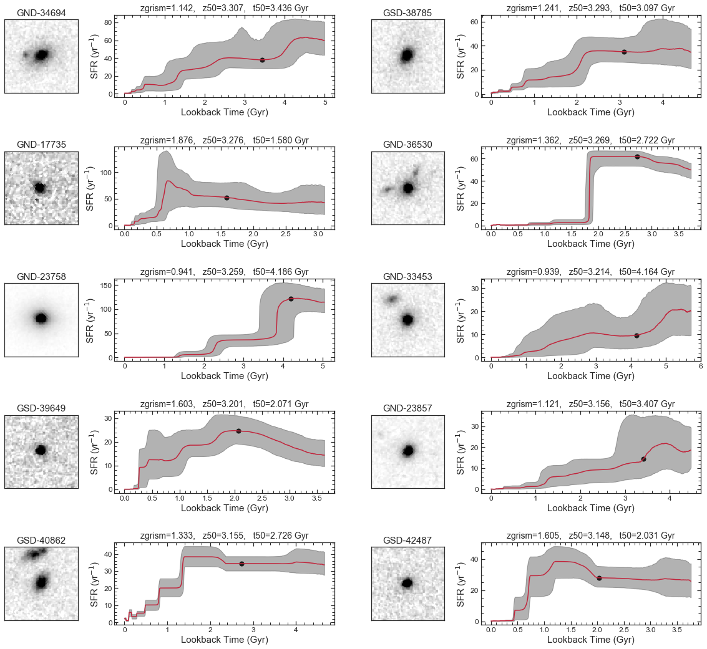
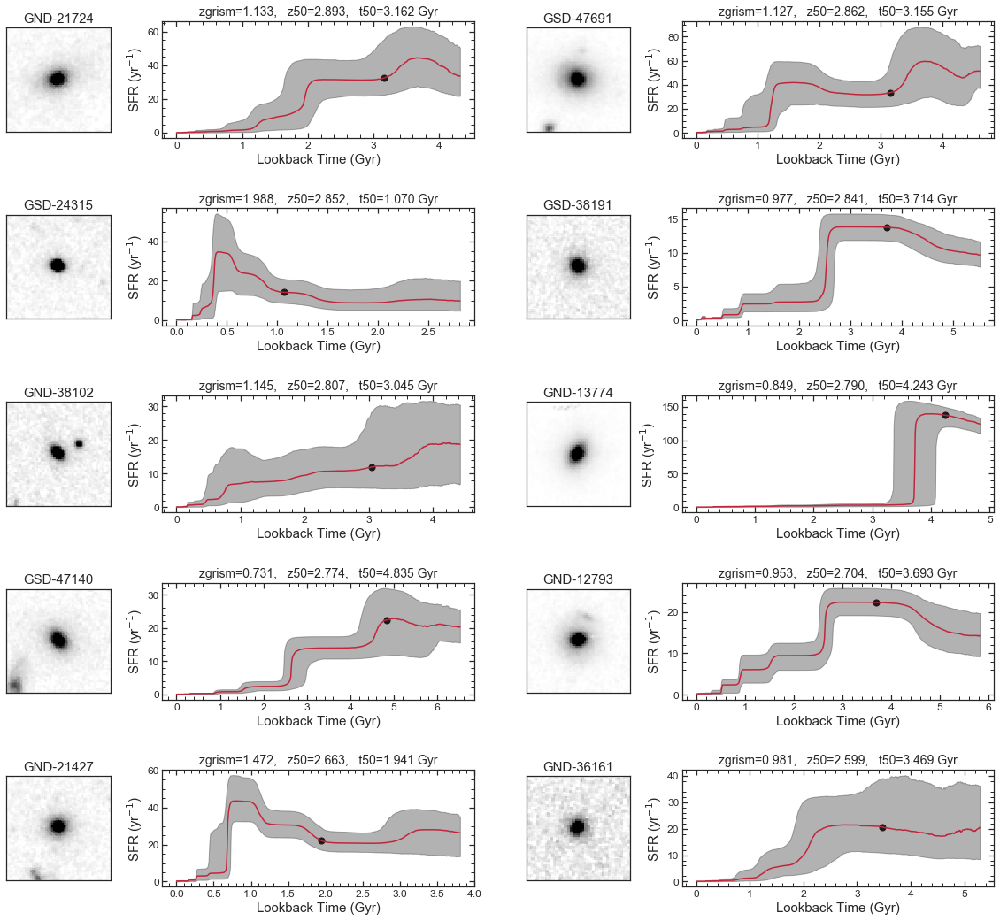
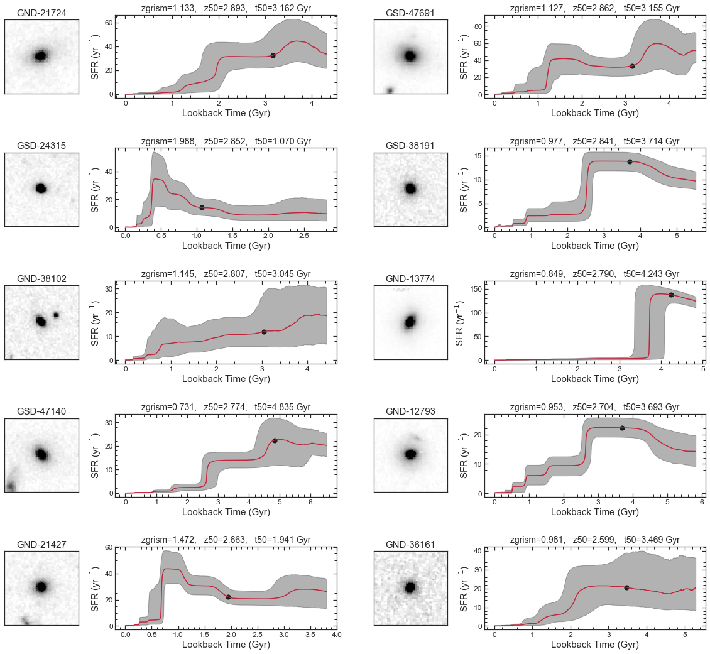
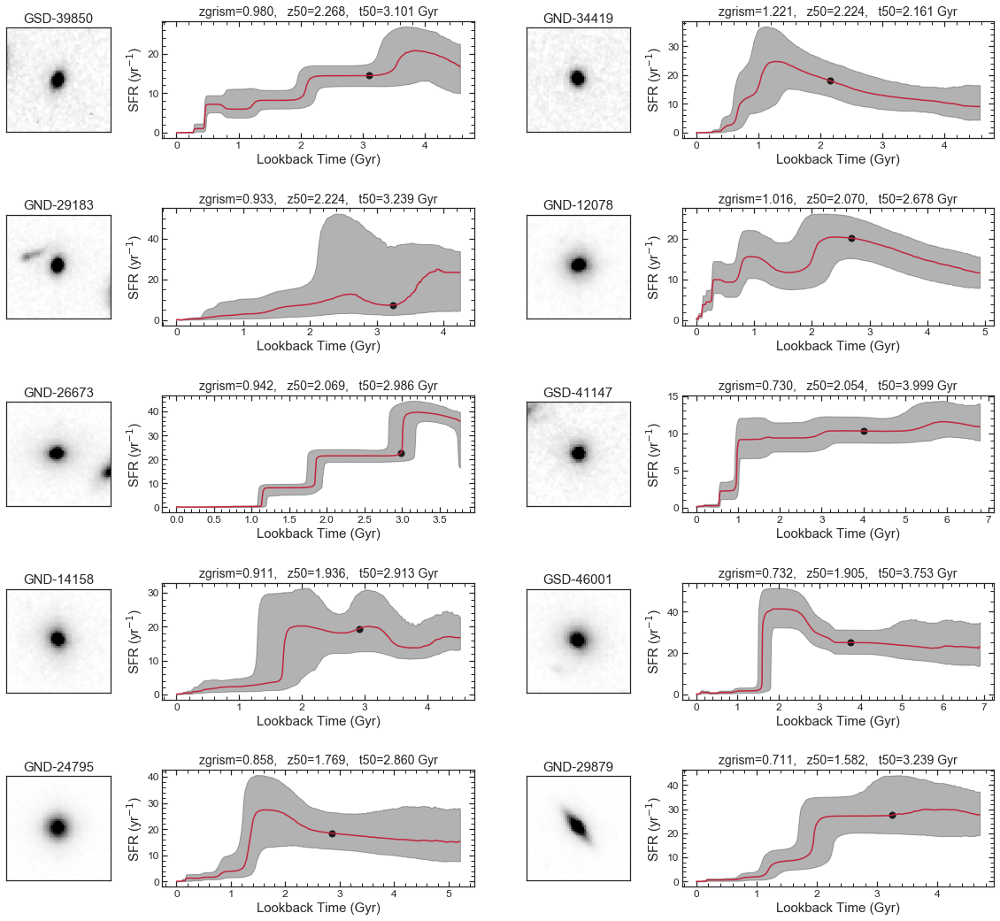
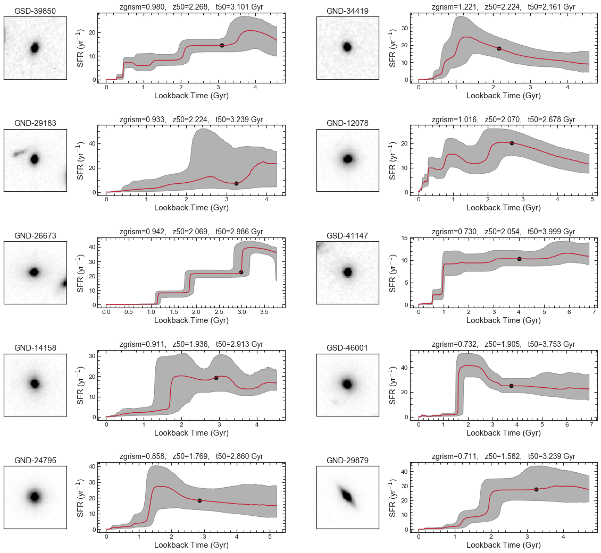

All star-formation histories ordered by formation redshift
Here we show galaxy cutouts and star-formation histories (ordered by formation redshift) for the sample of galaxies in Estrada-Carpenter et al. 2020.
The first plot shows all star-formation histories, plotted at their appropriate redshifts. The second plot shows the prior we used to fit our "non-parametric" star-formation histories. The following plots are then the galaxy cutouts and star-formation histories for each galaxy, with their formation redshift marked with a point, and relevant information shown at the top of the figure.

 

 

 

 

 
